Cell Type Deconvolution and Cell-Cell Interaction Analysis for Visium Breast Cancer
Python GPU-accelerated Adapted from the SpaCET R tutorial using the spatial-gpu package
Overview
This tutorial demonstrates how to use spatial-gpu to estimate cell-type identities and cell-cell interactions in spatial transcriptomics data. We use a 10x Visium breast cancer dataset where each 55 μm spot captures approximately 1–10 cells.
The spatial-gpu package provides a GPU-accelerated Python
implementation of the
SpaCET algorithm
(Nature Communications 14, 568, 2023). All functions in this tutorial work on
AnnData objects and
store results in adata.uns['spacet'].
The Visium breast cancer dataset is available from 10x Genomics.
API Mapping: R SpaCET → spatial-gpu
| R SpaCET | spatial-gpu (Python) |
|---|---|
| library(SpaCET) | import spatialgpu.deconvolution as spacet |
| create.SpaCET.object.10X() | spacet.create_spacet_object_10x() |
| SpaCET.quality.control() | spacet.quality_control() |
| SpaCET.deconvolution() | spacet.deconvolution() |
| SpaCET.visualize.spatialFeature() | spacet.visualize_spatial_feature() |
| SpaCET.CCI.colocalization() | spacet.cci_colocalization() |
| SpaCET.visualize.colocalization() | spacet.visualize_colocalization() |
| SpaCET.CCI.LRNetworkScore() | spacet.cci_lr_network_score() |
| SpaCET.CCI.cellTypePair() | spacet.cci_cell_type_pair() |
| SpaCET.visualize.cellTypePair() | spacet.visualize_cell_type_pair() |
| SpaCET.identify.interface() | spacet.identify_interface() |
| SpaCET.combine.interface() | spacet.combine_interface() |
| SpaCET.distance.to.interface() | spacet.distance_to_interface() |
| SpaCET.deconvolution.malignant() | spacet.deconvolution_malignant() |
1. Create SpaCET Object
Load the 10x Visium breast cancer data into an
AnnData object. The function reads the Space Ranger output
directory containing the filtered feature-barcode matrix and spatial
information. Spot IDs are formatted as "{array_row}x{array_col}".
import spatialgpu.deconvolution as spacet # Path to Space Ranger output directory visium_path = "data/Visium_BC" # Create AnnData object from 10X Visium data adata = spacet.create_spacet_object_10x(visium_path) # Inspect the object print(adata) print(adata.X[:8, :6].toarray())
SpaCET_obj@input$counts,
spatial-gpu follows the AnnData convention of spots-by-genes (adata.X).
The deconvolution results are stored in adata.uns['spacet'] using the
same structure as the R package (genes-by-spots DataFrames) for compatibility.
2. Quality Control Metrics
Assess data quality by filtering spots based on the number of expressed genes, and compute UMI and gene count metrics for visualization.
# Filter spots with fewer than 100 expressed genes adata = spacet.quality_control(adata, min_genes=100) # Visualize QC metrics (UMI counts and gene counts per spot) spacet.visualize_spatial_feature( adata, spatial_type="QualityControl", spatial_features=["UMI", "Gene"], )
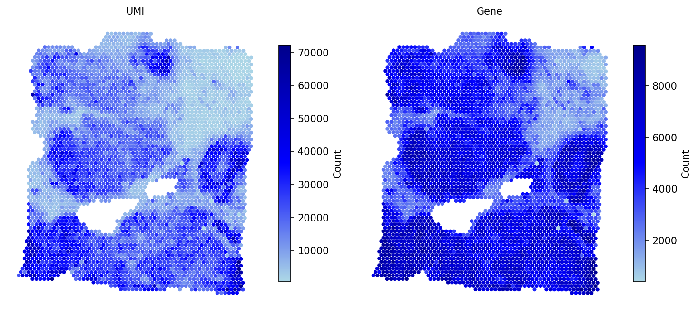
After QC, the metrics adata.obs['UMI'] and
adata.obs['Gene'] are available for downstream analysis.
3. Deconvolve ST Data
Decompose each spot into cell-type fractions using the two-stage SpaCET algorithm. Stage 1 infers the malignant cell fraction using a gene pattern dictionary of copy number alterations (CNA) and expression changes specific to each cancer type. Stage 2 applies a constrained regression model based on hierarchical cell lineage to determine immune and stromal fractions.
# Run two-stage deconvolution for breast cancer (BRCA) adata = spacet.deconvolution(adata, cancer_type="BRCA", n_jobs=5) # View deconvolution results (cell types x spots) prop_mat = adata.uns['spacet']['deconvolution']['propMat'] print(prop_mat.iloc[:13, :6])
cancer_type="PANCAN" for a
pan-cancer expression signature when a type-specific signature is unavailable.
4. Visualize Cell Type Proportions
4a. Selected cell types
# Spatial distribution of selected cell types spacet.visualize_spatial_feature( adata, spatial_type="CellFraction", spatial_features=["Malignant", "Macrophage"], )
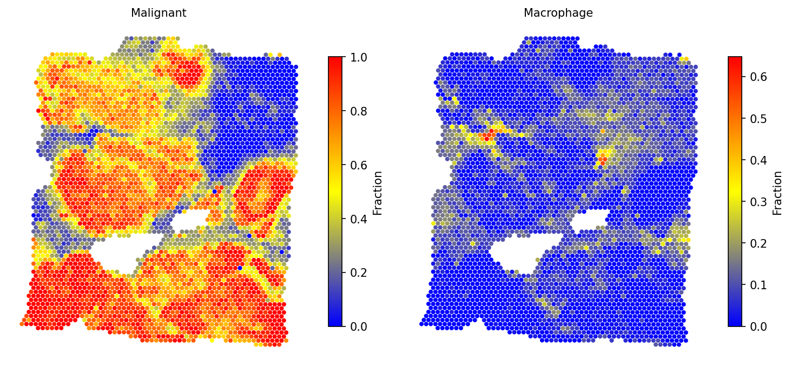
4b. All cell types
# Visualize all cell types with unified scale spacet.visualize_spatial_feature( adata, spatial_type="CellFraction", spatial_features=["All"], same_scale_fraction=True, point_size=0.1, ncols=5, )
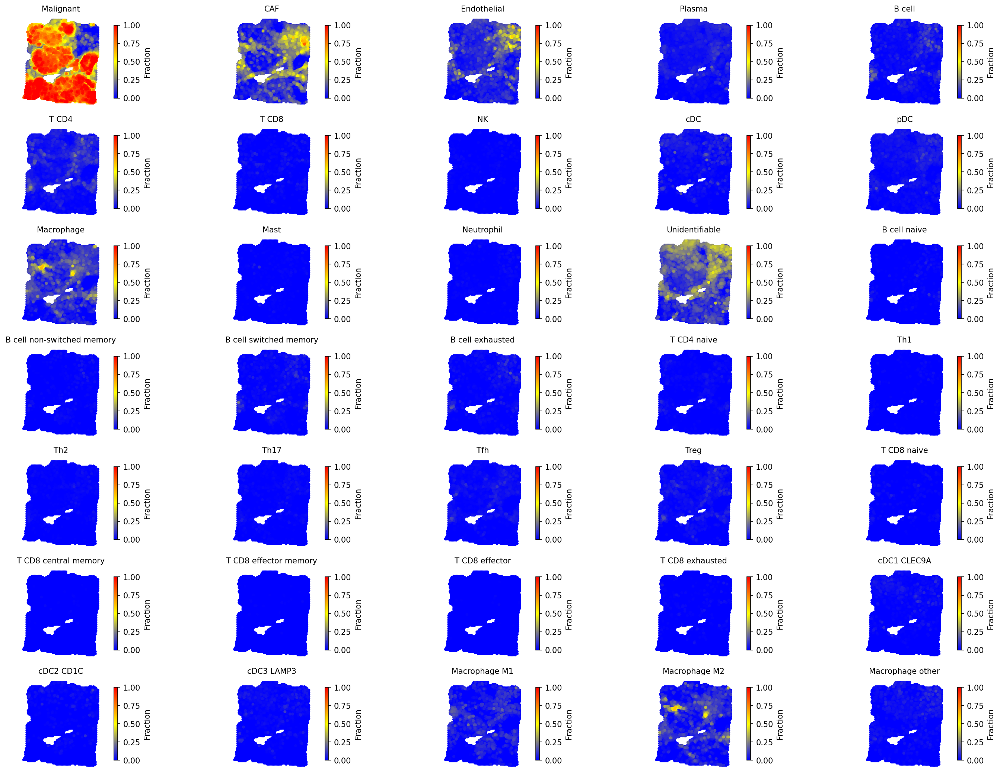
4c. Cell type composition (pie charts)
# Cell type composition as scatter pie charts spacet.visualize_spatial_feature( adata, spatial_type="CellTypeComposition", spatial_features=["MajorLineage"], point_size=3, )
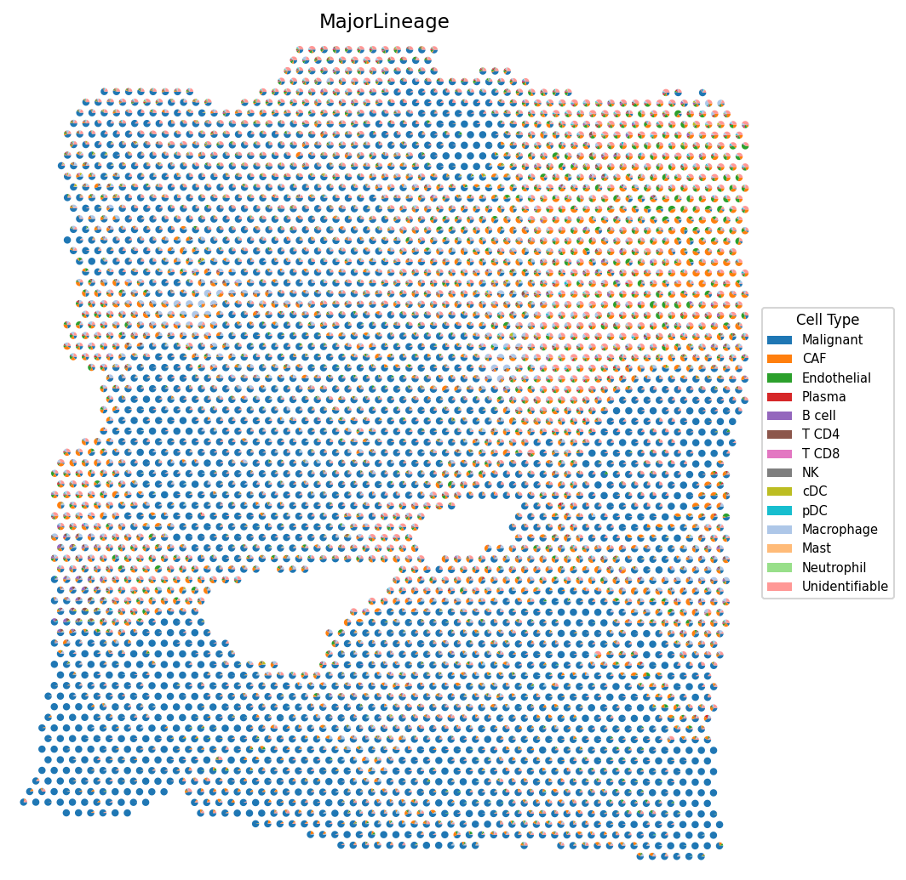
4d. Most abundant cell type
# Visualize the most abundant cell type per spot spacet.visualize_spatial_feature( adata, spatial_type="MostAbundantCellType", )
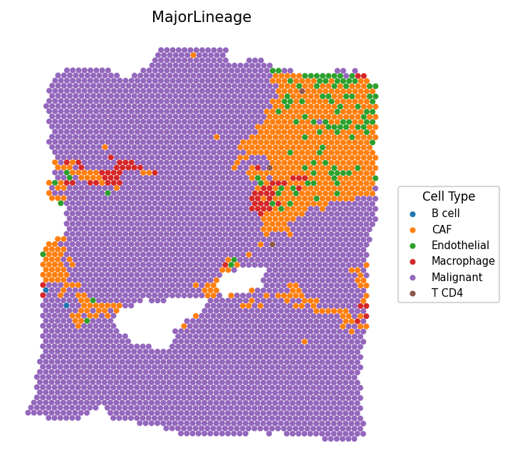
5. Estimate Cell-Cell Interactions
5a. Colocalization Analysis
Identify cell-type pairs that tend to colocalize. This analysis computes Spearman correlations of cell-type fractions across all spots. High positive correlations indicate colocalization tendency. The reference profile similarity is also computed to distinguish genuine interactions from transcriptomic similarity.
# Compute colocalization correlations adata = spacet.cci_colocalization(adata) # Visualize colocalization results spacet.visualize_colocalization(adata)
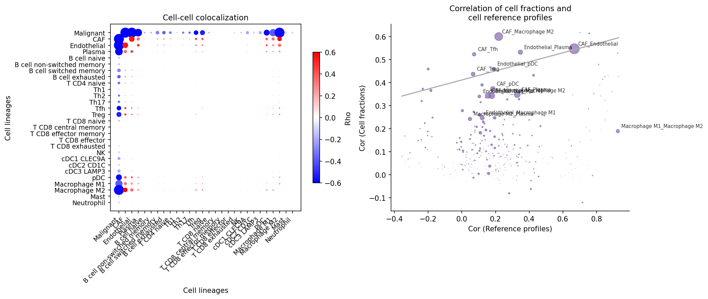
5b. Ligand-Receptor Network Score
Compute a ligand-receptor network score for each spot using an in-house database of ~2,500 L-R pairs. Significance is assessed by comparing against 1,000 BiRewire-based permuted networks that preserve directed degree distribution.
# Compute L-R network score with permutation testing adata = spacet.cci_lr_network_score(adata, n_jobs=6) # Visualize network scores and p-values spacet.visualize_spatial_feature( adata, spatial_type="LRNetworkScore", spatial_features=["Network_Score", "Network_Score_pv"], )
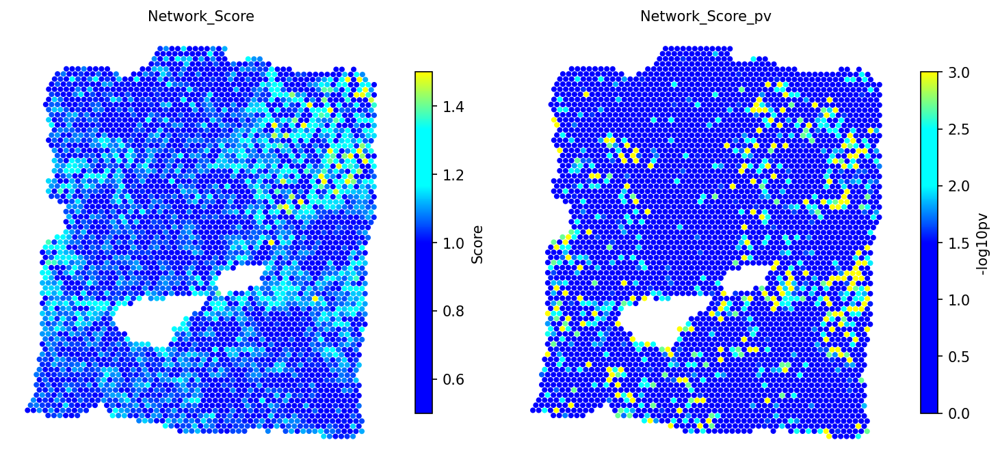
5c. Cell-Type Pair Enrichment
Test whether a colocalized cell-type pair has enriched L-R interactions. Spots are grouped into four categories: colocalized (high in both cell types), single-type dominated (high in one), or other. Cohen's d and Wilcoxon test assess whether colocalized spots have higher L-R network scores.
# Test CAF - Macrophage M2 interaction adata = spacet.cci_cell_type_pair( adata, cell_type_pair=("CAF", "Macrophage M2"), ) # Visualize the interaction analysis spacet.visualize_cell_type_pair( adata, cell_type_pair=("CAF", "Macrophage M2"), )
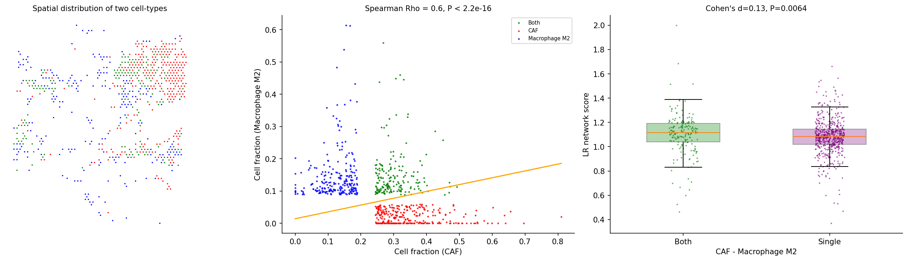
6. Tumor-Immune Interface Analysis
Identify spots at the tumor-stroma boundary and test whether cell-cell interactions cluster near this interface. Spots are classified as Tumor (malignant fraction ≥ 0.5), Interface (non-tumor with at least one tumor neighbor), or Stroma (non-tumor with no tumor neighbors).
6a. Identify interface
# Identify tumor-stroma interface spots adata = spacet.identify_interface(adata) # Visualize the interface spacet.visualize_spatial_feature( adata, spatial_type="Interface", spatial_features=["Interface"], )
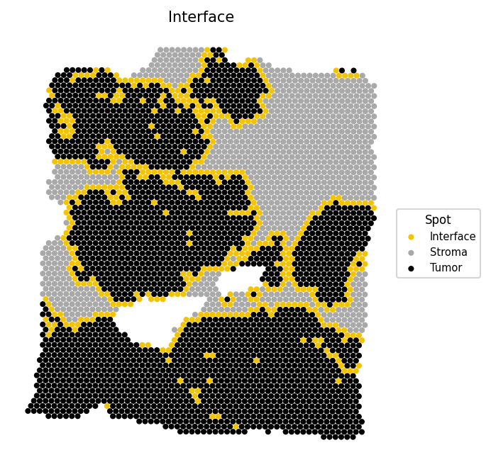
6b. Combine interface with interaction spots
# Overlay CAF-M2 interaction spots onto the interface map adata = spacet.combine_interface( adata, cell_type_pair=("CAF", "Macrophage M2"), ) # Visualize interface with interaction spots spacet.visualize_spatial_feature( adata, spatial_type="Interface", spatial_features=["Interface&CAF_Macrophage M2"], )
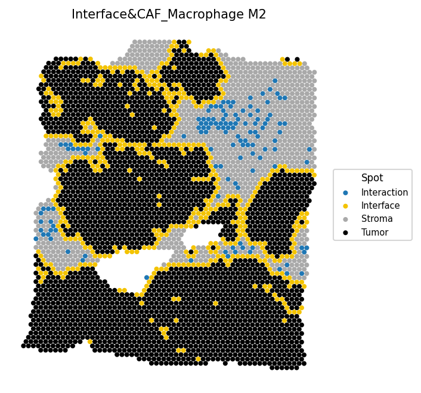
6c. Distance to interface
# Test if interaction spots are closer to the tumor border adata = spacet.distance_to_interface( adata, cell_type_pair=("CAF", "Macrophage M2"), ) # Visualize distance-to-interface permutation test spacet.visualize_distance_to_interface( adata, cell_type_pair=("CAF", "Macrophage M2"), )
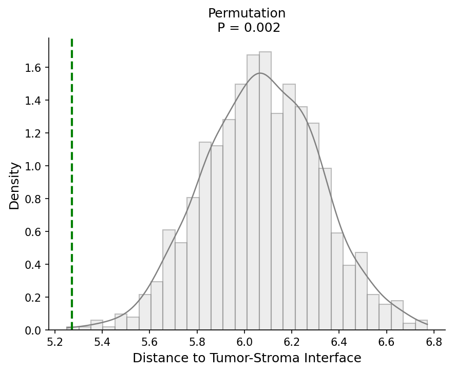
7. Explore Cancer Cell States
Characterize the spatial distribution of distinct malignant cell phenotypes. Spots with high malignant fraction (> 0.7) are clustered to discover sub-populations, and the malignant fraction is re-deconvolved into these states. Hierarchical clustering with silhouette-based cluster selection identifies the optimal number of states.
# Discover malignant cell states and re-deconvolve adata = spacet.deconvolution_malignant(adata, n_jobs=6) # View new malignant state fractions prop_mat = adata.uns['spacet']['deconvolution']['propMat'] print(prop_mat.loc[ ["Malignant cell state A", "Malignant cell state B"], prop_mat.columns[:6] ])
# Visualize malignant states alongside total malignant fraction spacet.visualize_spatial_feature( adata, spatial_type="CellFraction", spatial_features=[ "Malignant", "Malignant cell state A", "Malignant cell state B", ], ncols=3, )
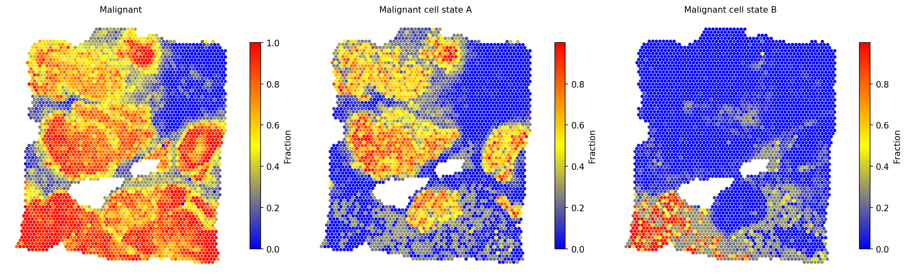
spacet.gene_set_score(adata, gene_sets="CancerCellState") to
score cancer cell state gene sets (e.g., EMT, hypoxia, proliferation) and
annotate the discovered malignant sub-populations.
Session Info
import spatialgpu print(f"spatial-gpu version: {spatialgpu.__version__}") import anndata, numpy, scipy, pandas, matplotlib print(f"anndata: {anndata.__version__}") print(f"numpy: {numpy.__version__}") print(f"scipy: {scipy.__version__}") print(f"pandas: {pandas.__version__}") print(f"matplotlib: {matplotlib.__version__}") try: import cupy print(f"cupy: {cupy.__version__} (GPU backend available)") except ImportError: print("cupy: not installed (CPU-only mode)")